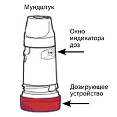
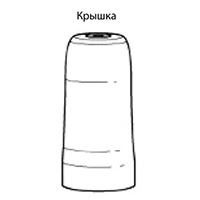
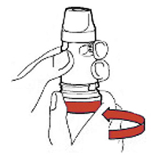
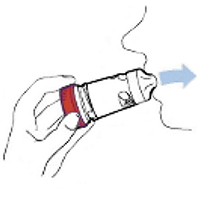
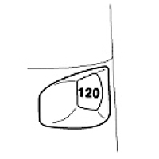
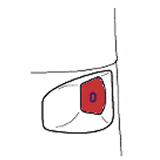

|
 |
| СИМБИКОРТ® ТУРБУХАЛЕР® (SYMBICORT TURBUHALER) budesonide, formoterol порошок д/ингаляций дозирован. | ||||||||||||||
|
Клинико-фармакологическая группа: Комбинированный бронхолитический препарат - селективный бета2-адреномиметик + местный глюкокортикоид Номер и дата регистрации: П N013167/01 от 28.09.11 Код ATX: R03AK07 |
Владелец регистрационного удостоверения: зарегистрировано Представительство: | |||||||||||||
Форма выпуска, состав и упаковка Порошок для ингаляций дозированный; содержимое ингалятора* - гранулы от белого до почти белого цвета, преимущественно округлой формы.
Вспомогательные вещества: лактозы моногидрат - 810 мкг. 60 доз - ингаляторы* пластиковые с контролем первого вскрытия (защитная пленка с указанием места вскрытия) (1) - пачки картонные. Порошок для ингаляций дозированный; содержимое ингалятора* - гранулы от белого до почти белого цвета, преимущественно округлой формы.
Вспомогательные вещества: лактозы моногидрат - 730 мкг. 60 доз - ингаляторы* пластиковые с контролем первого вскрытия (защитная пленка с указанием места вскрытия) (1) - пачки картонные. * Ингалятор Турбухалер®, состоящий из дозирующего устройства, резервуара для хранения порошка, резервуара для десиканта, мундштука и навинчивающейся крышки. Ингалятор: вращающийся дозатор красного цвета, на котором выдавлен код Брайля; крышка белого цвета; на внутренней стороне крышки расположено 5 ребристых утолщений в виде продольных полос; в окне индикатора дозирования видна цифра "60" или "120" для ингалятора на 60 или 120 доз, соответственно; мундштук имеет четыре продольных ребра и может вращаться. | ||||||||||||||
| ||||||||||||||
Описание препарата основано на официально утвержденной инструкции по применению и утверждено компанией-производителем для издания 2021 г. | ||||||||||||||
Фармакологическое действие |
Фармакокинетика |
Показания |
Режим дозирования |
Побочное действие |
Противопоказания |
Беременность и лактация |
Особые указания |
Передозировка |
Лекарственное взаимодействие |
Условия хранения и сроки годности |
Условия реализации
Фармакологическое действие
Симбикорт® содержит будесонид и формотерол, которые имеют разные механизмы действия и проявляют аддитивный эффект в отношении снижения частоты обострений бронхиальной астмы. Особые свойства будесонида и формотерола дают возможность использовать их комбинацию для купирования приступов/симптомов с противовоспалительным действием, или как поддерживающую терапию бронхиальной астмы. Будесонид - ГКС, который после ингаляции оказывает быстрое (в течение нескольких часов) и дозозависимое противовоспалительное действие на дыхательные пути, уменьшая выраженность симптомов и частоту обострений бронхиальной астмы. При назначении будесонида в форме ингаляций отмечается меньшая частота возникновения серьезных нежелательных эффектов, чем при применении системных ГКС. Уменьшает выраженность отека слизистой оболочки бронхов, продукцию слизи, образование мокроты и гиперреактивность дыхательных путей. Точный механизм противовоспалительного действия ГКС неизвестен. Формотерол - селективный агонист β2-адренорецепторов. После ингаляции вызывает быстрое и длительное расслабление гладкой мускулатуры бронхов у пациентов с обратимой обструкцией дыхательных путей. Бронхолитическое действие является дозозависимым, наступает в течение 1-3 мин после ингаляции и сохраняется в течение как минимум 12 ч после приема разовой дозы. Симбикорт® Турбухалер®: будесонид+формотерол Бронхиальная астма Клиническая эффективность препарата Симбикорт® в качестве терапии для купирования приступов/симптомов с противовоспалительным действием: для купирования приступов/симптомов с противовоспалительным действием (терапия А) и в качестве поддерживающей терапии и для купирования приступов/симптомов с противовоспалительным действием (терапия В) В целом в семь двойных слепых клинических исследований было включено 20140 пациентов с бронхиальной астмой, 7831 из которых были рандомизированы на терапию препаратом Симбикорт® для купирования приступов/симптомов с противовоспалительным действием и с поддерживающей терапией (терапия B) или без нее (терапия A). В двух исследованиях (SYGMA1 и SYGMA2) с участием 8064 пациентов с бронхиальной астмой легкой степени тяжести 3384 пациента получали Симбикорт® для купирования приступов/симптомов с противовоспалительным действием (терапия А) в течение 12 месяцев. В исследовании SYGMA2 Симбикорт® 160/4.5 мкг при применении по требованию в ответ на симптомы (для купирования приступов/симптомов с противовоспалительным действием – терапия А) был сопоставим с поддерживающей дозой будесонида (1 ингаляция 200 мкг/доза 2 раза/сут) в сочетании с бета2-адреномиметиком короткого действия по требованию в отношении частоты тяжелых обострений. Профилактика тяжелых обострений была достигнута с 75% снижением медианы стероидной нагрузки и без необходимости соблюдения поддерживающей терапии ингаляционными ГКС. В исследовании SYGMA1 Симбикорт® для купирования приступов/симптомов с противовоспалительным действием обеспечивал статистически достоверное и клинически значимое снижение ежегодной частоты тяжелых обострений на 64% по сравнению с применением бета2-адреномиметика короткого действия по требованию. Снижение ежегодной частоты среднетяжелых и тяжелых обострений составило 60%. В исследовании SYGMA1 Симбикорт® 160/4.5 мкг по требованию превосходил бета2-адреномиметик короткого действия по требованию в отношении контроля над симптомами бронхиальной астмы, показано в среднем 34.4% и 31.1% недель с хорошим контролем бронхиальной астмы, соответственно, но был менее эффективен в сравнении с поддерживающей дозой будесонида (1 ингаляция 200 мкг/доза 2 раза/сут) в сочетании с бета2-адреномиметиком короткого действия по требованию, со средними показателями 34.4% и 44.4% недель с хорошим контролем бронхиальной астмы, соответственно. Симбикорт® для купирования приступов/симптомов с противовоспалительным действием превосходил бета2-адреномиметик короткого действия по требованию в отношении улучшения контроля бронхиальной астмы (на основании результатов Опросника для оценки контроля над астмой из 5 пунктов (ACQ5)). Улучшение контроля заболевания было менее выраженным при применении препарата Симбикорт® по требованию в сравнении с поддерживающей дозой будесонида (1 ингаляция 200 мкг/доза 2 раза/сут) в сочетании с бета2-адреномиметиком короткого действия по требованию. Средняя разница эффекта терапии по ACQ5 не была клинически значимой в обоих сравнениях (оценивалась по разнице на 0.5 или более). Данные результаты наблюдались в условиях клинического исследования со значительно более высокой приверженностью поддерживающей терапии будесонидом, чем в реальной практике. В исследованиях SYGMA улучшение функции легких относительно исходного уровня (средний пребронходилатационный ОФВ1) было статистически значимо больше у пациентов, получавших Симбикорт® для купирования приступов/симптомов с противовоспалительным действием, по сравнению с пациентами, получавшими бета2-адреномиметик короткого действия по требованию. Статистически значимо меньшее улучшение функции легких отмечено при применении препарата Симбикорт® по требованию по сравнению с поддерживающей дозой будесонида (1 ингаляция 200 мкг/доза 2 раза/сут) в сочетании с бета2-адреномиметиком короткого действия по требованию. Для обоих сравнений средние различия эффекта терапии были небольшими (приблизительно от 30 до 55 мл, что соответствует приблизительно 2% от исходного среднего показателя). В другой клинической программе, включавшей 12076 пациентов в 5 исследованиях, в ходе наблюдения за 4447 пациентами, получавшими терапию препаратом Симбикорт® в качестве поддерживающей терапии и для купирования приступов/симптомов с противовоспалительным действием (терапия В) в течение от 6 до 12 месяцев, было отмечено статистически и клинически значимое уменьшение числа тяжелых обострений, увеличение периода времени до наступления первого обострения в сравнении с комбинацией препарата Симбикорт® или будесонида в качестве поддерживающей терапии и бета2-адреностимулятора для купирования приступов. Также отмечался эффективный контроль над симптомами заболевания, легочной функцией и снижение частоты назначения ингаляций для купирования приступов. Не было выявлено развития толерантности к назначенной терапии. По результатам 6 двойных слепых исследований с участием 14385 пациентов с бронхиальной астмой (из них 1847 подростков) была продемонстрирована сопоставимая эффективность и безопасность препарата у подростков и взрослых пациентов. Количество пациентов-подростков, принимавших более 8 ингаляций как минимум одни сутки в качестве поддерживающей терапии и для купирования приступов/симптомов с противовоспалительным действием, было ограничено, и применение в таком режиме было нечастым. У пациентов, обратившихся за медицинской помощью в связи с развитием острого приступа бронхиальной астмы, после ингаляций препарата Симбикорт® купирование симптомов (снятие бронхоспазма) наступало так же быстро и эффективно, как после назначения сальбутамола и формотерола. Клиническая эффективность препарата Симбикорт® в качестве поддерживающей терапии (терапия С) Добавление формотерола к будесониду уменьшает выраженность симптомов бронхиальной астмы, улучшает функцию легких и уменьшает частоту обострений заболевания. Действие препарата Симбикорт® Турбухалер® на функцию легких соответствует действию комбинации монопрепаратов будесонида и формотерола и превышает действие одного будесонида. Во всех случаях для купирования приступов использовался бета2-адреностимулятор короткого действия. Не отмечалось снижения противоастматического эффекта с течением времени. Препарат обладает хорошей переносимостью. Симбикорт® Турбухалер® в качестве поддерживающей терапии в комбинации с бета2-адреностимулятором короткого действия для купирования приступов назначался пациентам в возрасте от 6 до 11 лет в течение 12 недель (две ингаляции по 80/4.5 мкг/доза 2 раза/сут). Были отмечены улучшение легочной функции и хорошая переносимость терапии в сравнении с соответствующей дозой препарата будесонид Турбухалер®. ХОБЛ (хроническая обструктивная болезнь легких) В двух исследованиях продолжительностью 12 месяцев у пациентов со среднетяжелой и тяжелой ХОБЛ (исходно: пребронходилатационный ОФВ1 <50% от должного; медиана постбронходилатационного ОФВ1 = 42% от должного) на фоне приема препарата Симбикорт® Турбухалер® наблюдалось значительное снижение частоты обострений заболевания по сравнению с пациентами, получавшими в качестве терапии только формотерол или плацебо (средняя частота обострений 1.4 по сравнению с 1.8-1.9 в группе плацебо/формотерол). Не отмечено различий между приемом препарата Симбикорт® и формотерола на показатель объема форсированного выдоха за первую секунду (ОФВ1). Фармакокинетика
Симбикорт® Турбухалер® биоэквивалентен соответствующим монопрепаратам (будесониду и формотеролу) в отношении их системного действия. Несмотря на это, было отмечено небольшое усиление супрессии кортизола после приема препарата Симбикорт® Турбухалер® по сравнению с монопрепаратами. Это различие не влияет на клиническую безопасность. Доказательства фармакокинетического взаимодействия будесонида и формотерола отсутствуют. Фармакокинетические показатели будесонида и формотерола были сопоставимы после их приема в виде монопрепаратов и в составе препарата Симбикорт® Турбухалер®. Всасывание При применении комбинированного препарата AUC будесонида была несколько больше, всасывание препарата происходило быстрее и величина Cmax была выше; Cmax формотерола в плазме крови при введении в составе комбинированного препарата совпадала с таковой для монопрепарата. Будесонид Ингалируемый будесонид быстро абсорбируется и достигает Cmax в плазме через 30 мин после проведения ингаляции. Средняя доза будесонида, попавшего в легкие после проведения ингаляции через Турбухалер®, составляет 32-44% от доставленной дозы. Системная биодоступность составляет примерно 49% от доставленной дозы. У детей в возрасте от 6 до 16 лет средняя доза будесонида, попавшего в легкие после проведения ингаляции через Турбухалер®, не отличается от показателей у взрослых пациентов (конечная концентрация препарата в плазме крови не определялась). Формотерол Ингалируемый формотерол быстро абсорбируется и достигает Cmax в плазме крови через 10 мин после проведения ингаляции. Средняя доза формотерола, попавшего в легкие после проведения ингаляции через Турбухалер®, составляет 28-49% от доставленной дозы. Системная биодоступность - около 61% от доставленной дозы. Распределение Будесонид Связывание с белками плазмы крови составляет приблизительно 90%. Vd будесонида составляет приблизительно 3 л/кг. Формотерол С белками плазмы связывается примерно 50% формотерола. Vd формотерола составляет около 4 л/кг. Метаболизм Не существует доказательств взаимодействия метаболитов или реакции замещения между будесонидом и формотеролом. Будесонид Будесонид подвергается интенсивной биотрансформации (около 90%) при "первом прохождении" через печень с образованием метаболитов, обладающих низкой глюкокортикоидной активностью. Метаболизм будесонида осуществляется преимущественно с участием фермента CYP3A4. Глюкокортикоидная активность основных метаболитов - 6-β-гидроксибудесонида и 16-α-гидроксипреднизолона - не превышает 1% аналогичной активности будесонида. Формотерол Формотерол метаболизируется главным образом в печени путем конъюгации с образованием активных O-деметилированных метаболитов, в основном, в виде инактивированных конъюгатов. Выведение Будесонид Метаболиты будесонида выводятся почками в неизмененном виде или в форме конъюгатов. В моче обнаруживается только незначительное количество неизмененного будесонида. Будесонид имеет высокий системный клиренс (примерно 1.2 л/мин). Формотерол Формотерол выводится почками: после ингаляции 8-13% доставленной дозы формотерола выводится в неизмененном виде. Формотерол имеет высокий системный клиренс (примерно 1.4 л/мин); Т1/2 составляет в среднем 17 ч. Фармакокинетика в особых клинических случаях Фармакокинетика формотерола и будесонида у пациентов с почечной недостаточностью не изучена. Концентрация будесонида и формотерола в плазме крови может повышаться у пациентов с заболеваниями печени. Показания
Доза 80/4.5 мкг
Доза 160/4.5 мкг
Режим дозирования
Для ингаляционного применения. Доза 80/4.5 мкг Симбикорт® не предназначен для первоначального лечения бронхиальной астмы. Подбор дозы препаратов, входящих в состав препарата Симбикорт®, проводят индивидуально и в зависимости от степени тяжести заболевания. Это необходимо учитывать не только при начале лечения комбинированными препаратами, но и при изменении поддерживающей дозы препарата. Пациенты должны находиться под постоянным контролем врача для адекватного подбора дозы препарата Симбикорт® Турбухалер®. Симбикорт® Турбухалер® можно применять в соответствии с различными подходами к терапии:
В. Симбикорт® Турбухалер® в качестве поддерживающей терапии и для купирования приступов/симптомов с противовоспалительным действием При необходимости поддерживающей терапии комбинацией ингаляционного ГКС и агониста β2-адренорецепторов длительного действия, пациент может принимать Симбикорт® Турбухалер® в качестве поддерживающей терапии и в дополнение для купирования приступов/симптомов с противовоспалительным действием. Пациенту необходимо постоянно иметь при себе Симбикорт® для облегчения симптомов. Симбикорт® в качестве поддерживающей терапии и для купирования приступов/симптомов с противовоспалительным действием в особенности показан пациентам с:
Взрослые и подростки (12 лет и старше) Рекомендуемая доза для поддерживающей терапии 2 ингаляции/сут (по 1 ингаляции утром и вечером или 2 ингаляции однократно только утром или только вечером). При возникновении симптомов принимается 1 дополнительная ингаляция. При дальнейшем нарастании симптомов в течение нескольких минут назначается еще 1 дополнительная ингаляция, но не более 6 ингаляций для купирования 1 приступа. Обычно не требуется назначения более 8 ингаляций/сут, однако можно увеличить число ингаляций до 12 в сутки на непродолжительное время. Пациентам, получающим более 8 ингаляций/сут, рекомендовано обратиться за медицинской помощью для пересмотра терапии. Требуется тщательный контроль за дозозависимыми побочными эффектами у пациентов, использующих большое количество ингаляций для купирования приступов. Дети в возрасте до 12 лет Симбикорт® Турбухалер® в качестве поддерживающей терапии и для купирования приступов/симптомов с противовоспалительным действием не рекомендуется детям в возрасте до 12 лет. С. Симбикорт® Турбухалер® в качестве поддерживающей терапии (фиксированная доза) При необходимости поддерживающей терапии комбинацией ингаляционного ГКС и агониста β2-адренорецепторов длительного действия пациент может принимать Симбикорт® Турбухалер® в фиксированной суточной дозе и использовать отдельный бронходилататор короткого действия для облегчения симптомов. Взрослым (18 лет и старше) назначают 1-2 ингаляции 2 раза/сут. При необходимости возможно увеличение дозы до 4 ингаляций 2 раза/сут. Подросткам в возрасте 12-17 лет - 1-2 ингаляции 2 раза/сут; детям в возрасте 6-11 лет - 1-2 ингаляции 2 раза/сут. Детям в возрасте до 6 лет Симбикорт® Турбухалер® не рекомендован. Дозу следует снизить до наименьшей, на фоне которой сохраняется оптимальный контроль симптомов бронхиальной астмы. После достижения оптимального контроля симптомов бронхиальной астмы при приеме препарата 2 раза/сут рекомендуется титровать дозу до минимальной эффективной, вплоть до приема препарата 1 раз/сут в тех случаях, когда, по мнению врача, пациенту требуется поддерживающая терапия бронходилататором длительного действия в комбинации с ингаляционным ГКС. В том случае, если отдельным пациентам требуется иная комбинация доз действующих веществ, чем в препарате Симбикорт® Турбухалер®, следует назначить бета2-адреномиметики и/или ГКС в отдельных ингаляторах. Увеличение частоты использования бета2-адреномиметиков короткого действия является показателем ухудшения общего контроля заболевания и требует пересмотра противоастматической терапии. Нет необходимости в специальном подборе дозы препарата для пациентов пожилого возраста. Нет данных о применении препарата Симбикорт® пациентами с почечной или печеночной недостаточностью. Т.к. будесонид и формотерол, главным образом, выводятся при участии печеночного метаболизма, то у пациентов с тяжелым циррозом печени можно ожидать замедления скорости выведения препарата. Доза 160/4.5 мкг Бронхиальная астма Подбор дозы препаратов, входящих в состав препарата Симбикорт®, происходит индивидуально и в зависимости от степени тяжести заболевания. Это необходимо учитывать не только при начале лечения комбинированными препаратами, но и при изменении поддерживающей дозы препарата. Пациенты должны находиться под постоянным контролем врача для адекватного подбора дозы препарата Симбикорт® Турбухалер®. Симбикорт® Турбухалер® можно применять в соответствии с различными подходами к терапии:
В качестве альтернативы Симбикорт® Турбухалер® можно применять в виде терапии в фиксированной дозе:
А. Симбикорт® Турбухалер® для купирования приступов/симптомов с противовоспалительным действием (пациенты с бронхиальной астмой легкой степени тяжести) Симбикорт® Турбухалер® принимается по требованию для облегчения симптомов бронхиальной астмы при их развитии и для профилактики бронхоконстрикции, вызванной аллергенами или физической нагрузкой (или для профилактики симптомов в ситуациях, по оценке пациента способных спровоцировать приступ бронхиальной астмы). Формотерол, действующее вещество препарата Симбикорт® Турбухалер®, обеспечивает быстрое начало действия (в течение 1-3 мин) с длительной бронходилатацией (как минимум 12 ч после приема однократной дозы) при обратимой обструкции дыхательных путей. Пациенту необходимо постоянно иметь при себе Симбикорт® Турбухалер® для облегчения симптомов. Врачу следует обсудить экспозицию аллергена и объем физической нагрузки с пациентом и учитывать их при рекомендации частоты приема препарата. Взрослые и подростки (12 лет и старше) Пациенты должны принимать 1 ингаляцию по требованию при развитии симптомов и для профилактики бронхоконстрикции, вызванной аллергенами или физической нагрузкой, для контроля бронхиальной астмы. При дальнейшем нарастании симптомов в течение нескольких минут назначается еще 1 дополнительная ингаляция, но не более 6 ингаляций для купирования 1 приступа. Обычно не требуется более 8 ингаляций/сут, однако можно увеличить число ингаляций до 12 в сутки на непродолжительное время. Пациентам, получающим более 8 ингаляций/сут, рекомендовано обратиться за медицинской помощью для повторной оценки состояния и пересмотра терапии бронхиальной астмы. Требуется тщательный контроль за дозозависимыми побочными эффектами у пациентов, использующих большое количество ингаляций по требованию. Дети в возрасте до 12 лет Эффективность и безопасность препарата Симбикорт® Турбухалер® для купирования приступов/симптомов с противовоспалительным действием у данной категории пациентов не изучены. В. Симбикорт® Турбухалер® в качестве поддерживающей терапии и для купирования приступов/симптомов с противовоспалительным действием При необходимости поддерживающей терапии комбинацией ингаляционного ГКС и агониста β2-адренорецепторов длительного действия пациент может принимать Симбикорт® Турбухалер® в качестве поддерживающей терапии и в дополнение для купирования приступов/симптомов с противовоспалительным действием. Пациенту необходимо постоянно иметь при себе Симбикорт® для облегчения симптомов. Симбикорт® в качестве поддерживающей терапии и для купирования приступов/симптомов с противовоспалительным действием в особенности показан пациентам с:
Врачу следует обсудить экспозицию аллергена и объем физической нагрузки с пациентом и учитывать их при рекомендации частоты приема препарата. Взрослые и подростки (12 лет и старше) Пациенты должны принимать 1 ингаляцию по требованию при развитии симптомов и для профилактики бронхоконстрикции, вызванной аллергенами или физической нагрузкой, для контроля бронхиальной астмы. При дальнейшем нарастании симптомов в течение нескольких минут назначается еще 1 дополнительная ингаляция, но не более 6 ингаляций для купирования 1 приступа. Пациенты также принимают рекомендованную поддерживающую дозу – 2 ингаляции/сут, по 1 ингаляции утром и вечером или 2 ингаляции однократно только утром или только вечером. Для некоторых пациентов может быть назначена поддерживающая доза 2 ингаляции 2 раза/сут. Обычно не требуется назначения более 8 ингаляций/сут, однако можно увеличить число ингаляций до 12 в сутки на непродолжительное время. Пациентам, получающим более 8 ингаляций/сут, рекомендовано обратиться за медицинской помощью для повторной оценки и пересмотра поддерживающей терапии. Требуется тщательный контроль за дозозависимыми побочными эффектами у пациентов, использующих большое количество ингаляций по требованию. Дети в возрасте до 12 лет Симбикорт® Турбухалер® в качестве поддерживающей терапии и для купирования приступов/симптомов с противовоспалительным действием не рекомендуется данной категории пациентов. С. Симбикорт® Турбухалер® в качестве поддерживающей терапии (фиксированная доза) При необходимости поддерживающей терапии комбинацией ингаляционного ГКС и агониста β2-адренорецепторов длительного действия, пациент может принимать Симбикорт® Турбухалер® в фиксированной суточной дозе и использовать отдельный бронходилататор короткого действия для облегчения симптомов. Взрослым (18 лет и старше) назначают 1-2 ингаляции 2 раза/сут. При необходимости возможно увеличение дозы до 4 ингаляций 2 раза/сут. Подросткам в возрасте 12-17 лет - 1-2 ингаляции 2 раза/сут. Для детей в возрасте 6-11 лет доступен препарат в меньшей дозировке (80/4.5 мкг/доза). Симбикорт® Турбухалер® не рекомендован детям в возрасте до 6 лет. Дозу следует снизить до наименьшей, на фоне которой сохраняется оптимальный контроль симптомов бронхиальной астмы. После достижения оптимального контроля симптомов бронхиальной астмы при приеме препарата 2 раза/сут, рекомендуется титровать дозу до минимальной эффективной, вплоть до приема препарата 1 раз/сут в тех случаях, когда, по мнению врача, пациенту требуется поддерживающая терапия бронходилататором длительного действия в комбинации с ингаляционным ГКС. В том случае, если отдельным пациентам требуется иная комбинация доз действующих веществ, чем в препарате Симбикорт® Турбухалер®, следует назначить бета2-адреномиметики и/или ГКС в отдельных ингаляторах. Увеличение частоты использования бета2-адреномиметиков короткого действия является показателем ухудшения общего контроля над заболеванием и требует пересмотра противоастматической терапии. ХОБЛ Взрослым назначают 2 ингаляции 2 раза/сут. Нет необходимости в специальном подборе дозы препарата для пациентов пожилого возраста. Нет данных о применении препарата Симбикорт® пациентами с почечной или печеночной недостаточностью. Т.к. будесонид и формотерол, главным образом, выводятся при участии печеночного метаболизма, у пациентов с тяжелым циррозом печени можно ожидать замедления скорости выведения препарата. Способ применения Турбухалера Механизм действия Турбухалера: при вдыхании пациентом через мундштук препарат поступает в дыхательные пути. Необходимо инструктировать пациента:
Пациент может не почувствовать вкус или не ощутить препарат после использования Турбухалера, что обусловлено небольшим количеством доставляемого вещества. Инструкция по применению Турбухалера Турбухалер® – многодозовый ингалятор, позволяющий дозировать и вдыхать препарат в очень маленьких дозах (рис. 1).   Когда пациент делает вдох, порошок из Турбухалера доставляется в легкие. Поэтому важно сильно и глубоко вдохнуть через мундштук. Подготовка Турбухалера к первому использованию Перед первым использованием Турбухалера его необходимо подготовить к работе. 1. Отвинтить и снять крышку. 2. Следует держать ингалятор вертикально красным дозатором вниз (рис. 2). Не держать ингалятор за мундштук при поворачивании дозатора. Повернуть дозатор до упора в одном направлении (неважно, по часовой стрелке или против часовой стрелки), а затем также до упора в противоположном направлении. Во время поворота дозатора послышится щелчок. Выполнить описанную процедуру дважды.  Теперь ингалятор готов к использованию. Не следует повторять данную процедуру подготовки Турбухалера к работе перед каждым использованием. Для того чтобы принять препарат, необходимо следовать инструкции, приведенной ниже. Как использовать Симбикорт® Турбухалер® Для приема одной дозы необходимо следовать процедуре, описанной ниже. 1. Отвинтить и снять крышку. 2. Следует держать ингалятор вертикально красным дозатором вниз (рис. 2). Не держать ингалятор за мундштук при поворачивании дозатора. Для того чтобы отмерить дозу, необходимо повернуть дозатор до упора в одном направлении (неважно, по часовой стрелке или против часовой стрелки), а затем также до упора в противоположном направлении. Во время поворота дозатора послышится щелчок. 3. Выдохнуть. Не выдыхать через мундштук. 4. Осторожно поместить мундштук между зубами, сжать губы и вдохнуть сильно и глубоко через рот (рис. 3). Мундштук не жевать и не сжимать зубами.  5. Перед тем как выдохнуть, необходимо вынуть ингалятор изо рта. 6. Если требуется ингаляция более чем одной дозы, повторить шаги 2-5. 7. Закрыть ингалятор крышкой, проверить, чтобы крышка ингалятора была тщательно завинчена. 8. Прополоскать рот водой, не глотая. Важно! Не следует пытаться снять мундштук, поскольку он закреплен на ингаляторе и не снимается. Мундштук Турбухалера вращается, но не следует поворачивать его без необходимости. Поскольку количество вдыхаемого порошка очень мало, можно не почувствовать вкус порошка после ингаляции. Однако, если пациент следовал инструкции, то он может быть уверен в том, что вдохнул (ингалировал) необходимую дозу препарата. Если пациент перед принятием препарата по ошибке повторил процедуру для загрузки ингалятора больше чем один раз, при ингаляции он все равно получит одну дозу препарата. В то время как индикатор доз покажет общее количество отмеренных доз. Звук, который можно услышать, встряхивая ингалятор, производится осушающим агентом, а не лекарством. Как узнать, когда ингалятор должен быть заменен Индикатор доз (рис. 4) показывает приблизительное количество доз, оставшихся в ингаляторе, отсчет доз заполненного Турбухалера начинается с 60-й или 120-й дозы (в зависимости от общего количества доз приобретенного Турбухалера).  Индикатор показывает интервал в 10 доз, поэтому он не показывает каждую отмеренную (загруженную) дозу. Пациент может быть уверен, что Турбухалер® доставляет необходимую дозу препарата, даже если пациент не замечает изменения в окне индикатора доз. Появление красного фона в окне индикатора доз означает, что в Турбухалере осталось 10 доз препарата. При появлении цифры 0 на красном фоне в середине окна индикатора доз (рис. 5) ингалятор должен быть заменен на новый.  Следует обратить внимание, что даже когда окно индикатора доз показывает цифру 0, дозатор продолжает поворачиваться. Однако индикатор доз прекращает фиксировать количество доз (перестает двигаться) и в окне доз ингалятора остается цифра 0. Очистка Регулярно (раз в неделю) следует очищать мундштук снаружи сухой тканью. Не следует использовать воду или другие жидкости для очистки мундштука. Утилизация Необходимо соблюдать осторожность с использованным ингалятором, следует помнить о том, что внутри ингалятора может оставаться некоторое количество препарата. Побочное действие
На фоне совместного назначения двух препаратов не было отмечено увеличения частоты возникновения побочных реакций. Наиболее частыми побочными реакциями, связанными с приемом препарата, являются такие фармакологически ожидаемые для бета2-адреномиметиков нежелательные побочные явления, как тремор и тахикардия, которые обычно имеют умеренную степень выраженности и проходят через несколько дней после начала лечения. В ходе применения будесонида при ХОБЛ кровоподтеки и пневмония встречались с частотой 10% и 6% соответственно, по сравнению с 4% и 3% в группе с плацебо (р>0.001 и р>0.01 соответственно). Со стороны нервной системы: часто (>1/100, <1/10) - головная боль; нечасто (>1/1000, <1/100) - психомоторное возбуждение, беспокойство, тошнота, головокружение, нарушения сна; очень редко (<1/10000) - депрессия, нарушения поведения (главным образом, у детей), нарушения вкуса. Со стороны сердечно-сосудистой системы: часто (>1/100, <1/10) - ощущение сердцебиения; нечасто (>1/1000, <1/100) - тахикардия; редко (>1/10000, <1/1000) - аритмия (например, фибрилляция предсердий, суправентрикулярная тахикардия, экстрасистолия); очень редко (<1/10000) - стенокардия, колебания АД. Со стороны костно-мышечной системы: часто (>1/100, <1/10) - тремор; нечасто (>1/1000, <1/100) - мышечные судороги. Со стороны дыхательной системы: часто (>1/100, <1/10) - кандидоз слизистой оболочки полости рта и глотки, кашель, осиплость голоса, легкое раздражение в горле; редко (>1/10000, <1/1000) - бронхоспазм. Дерматологические реакции: нечасто (>1/1000, <1/100) - кровоподтеки; редко (>1/10000, <1/1000) - дерматит, экзантема, зуд. Аллергические реакции: редко (>1/10000, <1/1000) - реакции гиперчувствительности немедленного и замедленного типа (например, крапивница, ангионевротический отек, анафилактические реакции). Метаболические нарушения: редко (>1/10000, <1/1000) - гипокалиемия; очень редко (<1/10000) - гипергликемия, симптомы системного действия ГКС (включая гипофункцию надпочечников). Системное действие ингаляционных ГКС может наблюдаться при приеме препарата в высоких дозах в течение продолжительного времени. Применение бета2-адреномиметиков может приводить к увеличению содержания в крови инсулина, свободных жирных кислот, глицерола, кетоновых производных. Противопоказания
С осторожностью: туберкулез легких (активная или неактивная формы), грибковые, вирусные или бактериальные инфекции органов дыхания, тиреотоксикоз, феохромоцитома, сахарный диабет, снижение функции коры надпочечников, неконтролируемая гипокалиемия, гипертрофическая обструктивная кардиомиопатия, идиопатический гипертрофический субаортальный стеноз, тяжелая артериальная гипертензия, аневризма любой локализации или другие тяжелые сердечно-сосудистые заболевания (ИБС, тахиаритмия или сердечная недостаточность тяжелой степени), удлинение интервала QT (прием формотерола может вызвать удлинение интервала QTс). Применение при беременности и кормлении грудью
Нет клинических данных об использовании препарата Симбикорт® или совместного использования формотерола и будесонида во время беременности. При беременности Симбикорт® следует назначать только в тех случаях, когда польза от применения препарата превышает потенциальный риск для плода. Следует использовать наименьшую эффективную дозу будесонида, необходимую для поддержания адекватного контроля симптомов бронхиальной астмы. Ингалируемый будесонид выделяется с грудным молоком, однако при применении в терапевтических дозах воздействия на ребенка не отмечено. Неизвестно, проникает ли формотерол в грудное молоко женщин. Симбикорт® может быть назначен кормящим женщинам только в том случае, если ожидаемая польза для матери больше, чем любой возможный риск для ребенка. Особые указания
Указания по дозированию Если симптомы бронхиальной астмы поддаются контролю, можно постепенно снижать дозу препарата Симбикорт® Турбухалер®, при этом важно постоянно следить за состоянием пациентов. Следует назначать наименьшую эффективную дозу препарата Симбикорт® Турбухалер®. Пациентам рекомендуется постоянно иметь при себе препараты неотложной помощи или Симбикорт® Турбухалер® (для пациентов с бронхиальной астмой, применяющих Симбикорт® Турбухалер® для купирования приступов/симптомов с противовоспалительным действием – терапия А или В), или бета2-адреномиметики короткого действия (для всех пациентов, применяющих Симбикорт® Турбухалер® только для поддерживающей терапии – терапия С). При применении препарата Симбикорт® в качестве поддерживающей терапии следует обратить внимание пациента на необходимость регулярного приема поддерживающей дозы препарата в соответствии с подобранной терапией, даже в случаях отсутствия симптомов заболевания. Рекомендуется проинструктировать пациента о необходимости полоскать рот водой после ингаляций поддерживающих доз с целью предотвращения риска развития кандидоза слизистой оболочки полости рта и глотки. Также необходимо полоскать рот водой после проведения ингаляций по требованию в случае развития кандидоза слизистой оболочки полости рта и глотки. Рекомендуется постепенно уменьшать поддерживающую дозу препарата перед прекращением лечения и не рекомендуется резко отменять лечение. Не следует полностью отменять ингаляционные ГКС, за исключением случаев, когда временная отмена необходима для подтверждения диагноза бронхиальной астмы. Симбикорт® Турбухалер® 80/4.5 мкг/доза не предназначен для пациентов с бронхиальной астмой легкой и тяжелой степени. Усиление симптомов заболевания Во время терапии препаратом Симбикорт® Турбухалер® могут отмечаться обострения и развитие серьезных нежелательных явлений, связанных с бронхиальной астмой. Пациентам следует продолжать лечение, но обратиться за медицинской помощью при отсутствии контроля симптомов бронхиальной астмы или в случае ухудшения состояния после начала терапии. При недостаточной эффективности терапии или превышении максимальных рекомендуемых доз препарата Симбикорт® необходимо пересмотреть тактику лечения. Неожиданное и прогрессирующее ухудшение контроля симптомов бронхиальной астмы или ХОБЛ является потенциально угрожающим для жизни состоянием и требует срочного медицинского вмешательства. В данной ситуации следует рассмотреть возможность повышения дозы ГКС, например, назначение курса пероральных ГКС, или лечения антибиотиками в случае присоединения инфекции. При тяжелом обострении монотерапии комбинированным препаратом ингаляционного ГКС и бета2-адреномиметика длительного действия недостаточно. Перевод с пероральной терапии Если есть основания полагать, что на фоне предшествующей системной терапии ГКС была нарушена функция надпочечников, следует принять меры предосторожности при переводе пациентов на лечение препаратом Симбикорт®. Преимущества ингаляционной терапии будесонидом, как правило, сводят к минимуму необходимость приема пероральных ГКС, однако у пациентов, прекращающих терапию пероральными ГКС, в течение длительного времени может сохраняться недостаточная функция надпочечников. Пациенты, которые в прошлом нуждались в неотложном приеме ГКС в высоких дозах или получали длительное лечение ингаляционными ГКС в высокой дозе, также могут находиться в этой группе риска. Необходимо предусмотреть дополнительное назначение ГКС в период стресса или хирургического вмешательства. Вспомогательные вещества Симбикорт® Турбухалер® содержит лактозу (1 мг/ингаляция). Обычно такое количество не вызывает проблем у пациентов с непереносимостью лактозы. Меры предосторожности при отдельных заболеваниях Следует соблюдать меры предосторожности при лечении пациентов с удлиненным интервалом QTс. Прием формотерола может вызвать удлинение интервала QTс. При совместном применении бета2-адреномиметиков с препаратами, которые могут вызвать или усилить гипокалиемический эффект, например, производные ксантина, стероиды или диуретики, возможно усиление гипокалиемического эффекта бета2-адреномиметиков. Следует соблюдать особые меры предосторожности у пациентов с нестабильной бронхиальной астмой, применяющих бронходилататоры короткого действия для снятия приступов, при обострении тяжелой бронхиальной астмы, т.к. риск развития гипокалиемии увеличивается на фоне гипоксии и при других состояниях, когда увеличивается вероятность развития гипокалиемического эффекта. В таких случаях рекомендуется контролировать содержание калия в сыворотке. В период лечения следует контролировать концентрацию глюкозы в крови у пациентов с сахарным диабетом. Следует пересмотреть необходимость применения и дозу ингаляционного ГКС у пациентов с активной или неактивной формами туберкулеза легких, грибковыми, вирусными или бактериальными инфекциями органов дыхания. Системное действие Системное действие может проявиться при приеме любых ингаляционных ГКС, особенно при приеме препаратов в высоких дозах в течение длительного периода времени. Проявление системного действия менее вероятно при проведении ингаляционной терапии, чем при применении пероральных ГКС. К возможным системным эффектам относятся подавление функции надпочечников, задержка роста у детей и подростков, снижение минеральной плотности костной ткани, катаракта и глаукома. Из-за потенциально возможного действия ингаляционных ГКС на минеральную плотность костной ткани следует уделять особое внимание пациентам, принимающим высокие дозы препарата в течение длительного периода, с наличием факторов риска развития остеопороза. Исследования длительного применения ингаляционного будесонида у детей в средней суточной дозе 400 мкг (отмеренная доза) или взрослых в суточной дозе 800 мкг (отмеренная доза) не показали заметного действия на минеральную плотность костной ткани. Нет данных относительно действия высоких доз препарата Симбикорт® Турбухалер® на минеральную плотность костной ткани. Парадоксальный бронхоспазм Как и при любой другой ингаляционной терапии, возможно возникновение парадоксального бронхоспазма с немедленным усилением хрипов после приема дозы препарата. В связи с этим следует прекратить терапию препаратом Симбикорт®, пересмотреть тактику лечения и, при необходимости, назначить альтернативную терапию. Популяция пациентов детского возраста Рекомендуется регулярно мониторировать рост детей, длительно получающих терапию ГКС в ингалируемой форме. В случае установленной задержки роста следует пересмотреть терапию с целью снижения дозы ингалируемого ГКС. Необходимо тщательно оценивать соотношение преимущества терапии ГКС и возможного риска задержки роста. При выборе терапии рекомендуется обратиться к детскому пульмонологу. Основываясь на ограниченных данных исследований о длительном приеме ГКС, можно предположить, что большинство детей и подростков, получающих терапию ингаляционным будесонидом, в конечном итоге достигнут нормальных для взрослых показателей роста. Вместе с тем, сообщалось о незначительной кратковременной задержке роста, в основном, в первый год лечения. Популяция пациентов с ХОБЛ Данные клинических исследований препарата Симбикорт® Турбухалер® у пациентов с ХОБЛ с пребронходилатационным ОФВ1 >50% от должного и с постбронходилатационным ОФВ1 <70% от должного отсутствуют. Клинические исследования и мета-анализы показали, что применение ингаляционных ГКС при ХОБЛ может привести к повышению риска пневмонии. Однако абсолютный риск при применении будесонида небольшой. Мета-анализ 11 двойных слепых исследований с участием 10570 пациентов с ХОБЛ не продемонстрировал статистически значимого повышения риска пневмонии у пациентов, получавших будесонид (в т.ч. в комбинации с формотеролом), по сравнению с пациентами, получавшими терапию без будесонида (плацебо или формотерол). Частота развития серьезного нежелательного явления (пневмонии) составила 1.9% в год при терапии, включающей будесонид, и 1.5% в год – при терапии без будесонида. Объединенное соотношение рисков при сравнении терапии, включающей будесонид, с терапией без будесонида составило 1.15 (95% доверительный интервал (ДИ): 0.83, 1.57). Объединенное соотношение рисков при сравнении будесонида/формотерола с формотеролом или плацебо составило 1.00 (95% ДИ: 0.69, 1.44). Причинно-следственная связь развития пневмонии с применением препаратов, содержащих будесонид, не установлена. Влияние на способность к управлению транспортными средствами и механизмами Симбикорт® Турбухалер® не оказывает влияния на способность к управлению транспортными средствами и механизмами. Может оказывать влияние на способность к управлению транспортными средствами и механизмами в случае развития побочного действия. Передозировка
Симптомы: при острой передозировке будесонида, даже в значительных дозах, не ожидается клинически значимых симптомов. При хроническом приеме будесонида в чрезмерных дозах может проявиться системное действие ГКС, такое как гиперкортицизм и подавление функции надпочечников. При передозировке формотерола - тремор, головная боль, учащенное сердцебиение; в отдельных случаях сообщалось о развитии тахикардии, гипергликемии, гипокалиемии, удлинении интервала QTc, аритмии, тошноты, рвоты. При острой бронхиальной обструкции прием формотерола в дозе 90 мкг в течение 3 ч был безопасен. Лечение: показано поддерживающее и симптоматическое лечение. В случае необходимости отмены препарата Симбикорт® Турбухалер® вследствие передозировки формотерола, входящего в состав комбинированного препарата, следует рассмотреть вопрос о назначении соответствующего ГКС. Лекарственное взаимодействие
При одновременном приеме внутрь кетоконазола в дозе 200 мг 1 раз/сут и будесонида в дозе 3 мг концентрация будесонида в плазме увеличивается в среднем в 6 раз. При приеме кетоконазола через 12 ч после приема будесонида концентрация последнего в плазме повышается в среднем в 3 раза. Информация о подобном взаимодействии с будесонидом при ингаляционном введении отсутствует, однако следует ожидать заметного повышения концентрации препарата в плазме крови. Т.к. данные для рекомендаций по подбору дозы отсутствуют, следует избегать указанной комбинации препаратов. Если это невозможно, то интервалы между приемами кетоконазола и будесонида необходимо максимально увеличить. Также следует рассмотреть возможность снижения дозы будесонида. Другие мощные ингибиторы CYP3A4, вероятно, также могут значительно увеличивать содержание будесонида в плазме. Не рекомендуется назначение препарата Симбикорт® Турбухалер® для купирования приступов/симптомов с противовоспалительным действием пациентам, получающим мощные ингибиторы CYP3A4. Блокаторы β-адренорецепторов могут ослаблять действие формотерола. Симбикорт® Турбухалер® не следует назначать одновременно с бета-адреноблокаторами (включая глазные капли), за исключением вынужденных случаев. При одновременном применении препарата Симбикорт® Турбухалер® и хинидина, дизопирамида, прокаинамида, фенотиазинов, антигистаминных препаратов (терфенадина), ингибиторов МАО и трициклических антидепрессантов возможно удлинение интервала QTс и увеличение риска возникновения желудочковых аритмий. Кроме того, леводопа, левотироксин, окситоцин и этанол могут снижать толерантность сердечной мышцы к бета2-адреномиметикам. При одновременном назначении ингибиторов МАО, а также препаратов, обладающих подобными свойствами (фуразолидон, прокарбазин), возможно повышение АД. Существует повышенный риск развития аритмий у пациентов при проведении общей анестезии препаратами галогенизированных углеводородов на фоне применения препарата Симбикорт® Турбухалер®. При одновременном приеме препарата Симбикорт® Турбухалер® и других агонистов β-адренорецепторов возможно усиление побочного действия формотерола. Гипокалиемическое действие бета2-адреномиметиков может быть усилено при одновременном назначении производных ксантина, минеральных производных ГКС и диуретиков. Гипокалиемия повышает предрасположенность к развитию аритмий у пациентов, принимающих сердечные гликозиды. Не было отмечено взаимодействия будесонида и формотерола с другими лекарственными препаратами, которые применяются для лечения бронхиальной астмы. |
||||||||||||||
Вернуться наверх |
||||||||||||||
Copyright © Справочник Видаль «Лекарственные препараты в России», Москва, Россия